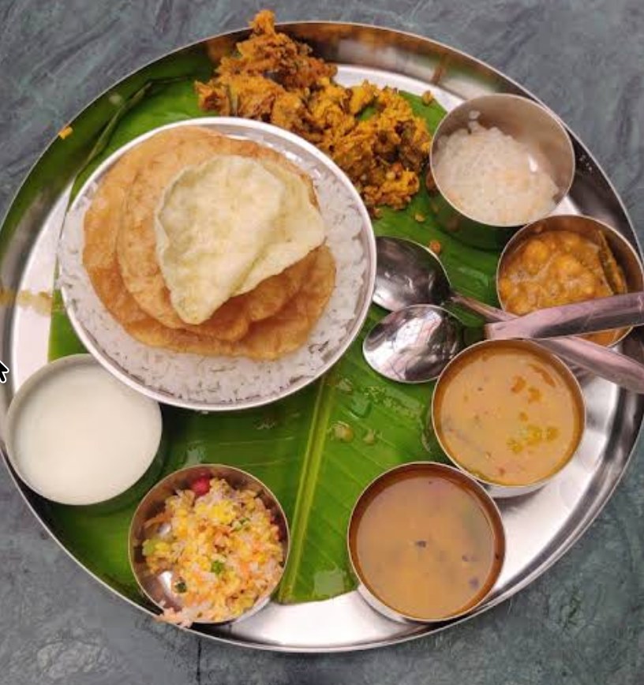

About Mayura Cafe
Your neighbourhood
food stop.
A place in Nagarbhavi for familiar vegetarian favourites, a quick bite, a South Indian breakfast or a cup of tea.
Plan your visit ↗
Simple, satisfying, vegetarian
Everyday food.
Easy choices.
Mayura Cafe and Food Court serves vegetarian options in the Nagarbhavi neighbourhood of Bengaluru. The menu spans South Indian tiffin, meals, savoury snacks and drinks.
Whether you're stopping by for breakfast, picking up something to eat or taking a break over tea, the aim is to make everyday food choices convenient and approachable.
Have a question about an item, its availability or current pricing? Call the cafe before visiting.
Call the cafeWhat to expect
Vegetarian favourites
in Nagarbhavi.
Vegetarian menuOptions across tiffin, meals, snacks and drinks.
Neighbourhood locationLocated in BDA Layout, 2nd Stage, Nagarbhavi.
Speak to the teamCall for current menu, prices and opening hours.